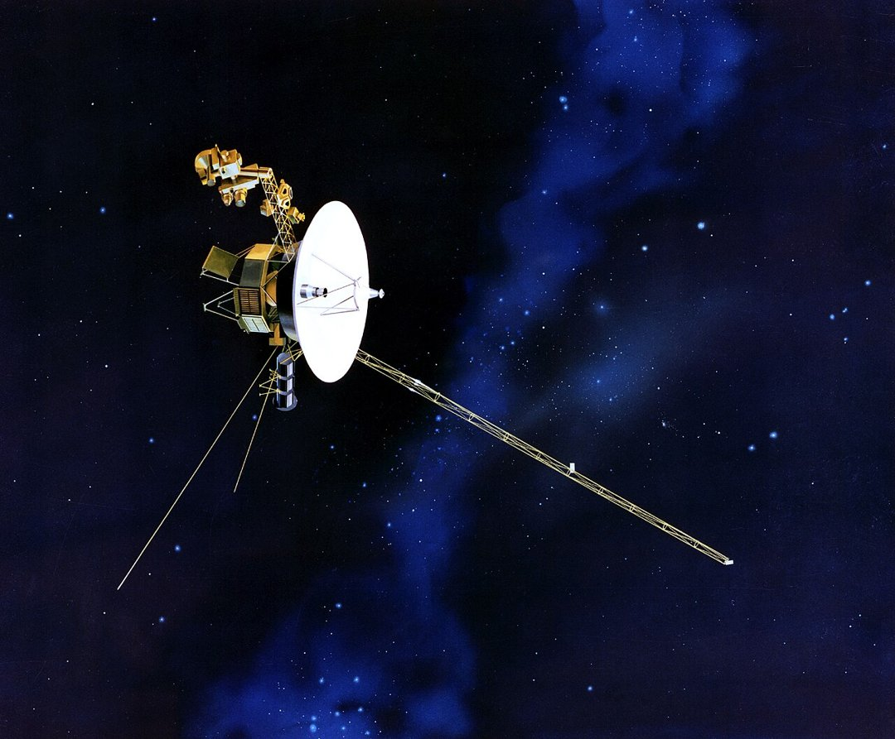
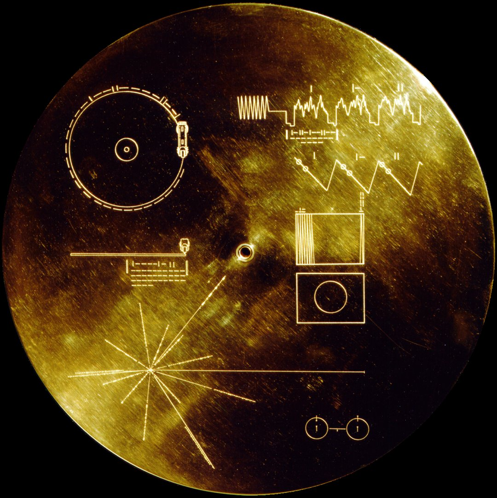

📷 사진 1 자리
▲ 보이저 탐사선 상상도 · 사진: NASA/JPL / 퍼블릭 도메인 / 위키미디어 공용
1977년에 떠난 NASA의 보이저 1호가 지구에서 '1광일' 떨어진 곳에 닿아요. 사람이 만든 물체로는 처음이에요. NASA는 이를 기념해 전 세계 사람들에게 오늘 해가 진 뒤 하늘을 향해 불빛 신호를 보내 달라고 했어요.
한국 시각으로 언제
NASA가 밝힌 통과 시각은 미국 동부 시각 11월 18일 오전 5시 16분이에요. 한국 시각으로 바꾸면 11월 18일(수) 오후 7시 16분이에요.
그 순간 하늘에서 무언가 보이거나 탐사선이 달라지지는 않아요. NASA도 보이저 1호가 이 지점을 지날 때 주변 환경에서 감지할 변화는 없고 탐사선 안에서도 바뀌는 건 없다고 설명했어요. 거리가 하나의 기준선을 넘는 일이에요.
1광일은 얼마나 멀까
1광일은 시간이 아니라 거리예요. 초속 약 30만 km로 달리는 빛이 하루 동안 가는 거리죠. 계산하면 약 259억 km이고 지구와 태양 사이 거리의 약 173배예요.
| 구분 | 내용 |
|---|---|
| 1광일 거리 | 약 259억 km(약 161억 마일) |
| 지구-태양 거리와 비교 | 약 173배 |
| 지구에서 보낸 명령이 닿는 데 | 약 24시간 |
| 답이 돌아오기까지 | 약 48시간 |
통신은 빛과 같은 속도의 전파로 해요. 그래서 이제 관제팀이 보낸 명령은 하루 뒤에 도착하고 보이저 1호의 답을 받으려면 꼬박 이틀을 기다려야 해요.
보이저 1호는 목성과 토성을 지나며 사진과 자료를 보냈고 2012년에는 태양의 영향권을 벗어나 성간 공간에 들어간 첫 인공물이 됐어요. 50년 가까운 비행으로 관측 장비는 대부분 멈췄고 NASA는 2035년쯤이면 지구와의 통신이 어려워질 것으로 보고 있어요.
📷 사진 2 자리
▲ 보이저 1·2호에 실린 '골든 레코드' 덮개 · 사진: NASA/JPL / 퍼블릭 도메인 / 위키미디어 공용
오늘 밤 'V-G-R' 신호 보내는 법
NASA의 'Shine Bright for Voyager's Light-Day' 행사예요. 17일 해가 진 뒤 손전등이나 휴대폰 불빛을 하늘로 향하고 보이저의 호출 부호 V-G-R을 모스부호로 깜빡이면 돼요.
손으로 하기 어렵다면 NASA 행사 페이지의 자동 깜빡이(Automated V-G-R Flasher)를 휴대폰 브라우저로 열어 하늘로 들면 알아서 신호를 보내 줘요. 화면이 깜빡이니 빛에 민감한 분은 주의하세요. 찍은 사진이나 영상을 SNS에 올릴 때 @NASA를 태그해 달라는 것도 NASA의 요청이에요.
1광일이라는 숫자보다 와닿는 건 '하루 늦은 대화'예요. 오늘 보낸 신호에 대한 답이 모레 온다는 거리감이야말로, 반세기 전에 떠난 탐사선이 아직도 지구와 연결돼 있다는 사실을 가장 정확하게 보여 줘요.
보이저 1호의 1광일 통과는 한국 시각 18일 오후 7시 16분이에요. 신호 보내기 행사는 그 전날인 오늘 해가 진 뒤예요.
함께 보면 좋은 이슈

